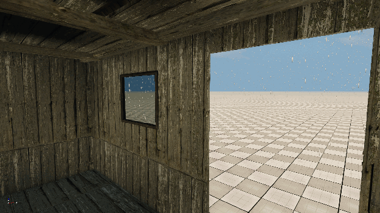
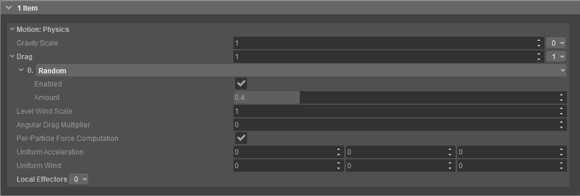
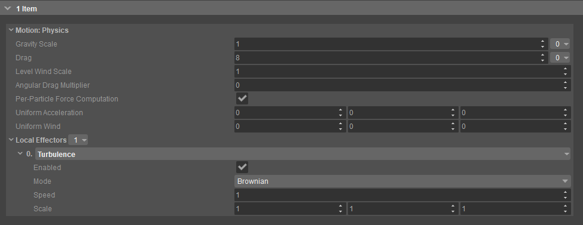

Overview
In the Particle Editor, the features Location: Omni and Motion: Collisions work together to create an omnipresent colliding effect. By setting different parameters appropriately, an omnipresent environmental effect like rain or snow can be created, making sure that the particles are generated far from the viewer and collide with objects before coming into view.
Modifying the features mentioned below and setting them to specific values force a particle effect to stay out of certain areas. It makes sure that physical entities such as roofs, overhangs, walls etc. kill the particles on collision before they can penetrate the surface and enter indoors or other areas. 
Rain outside, but not inside
When assigned to a newly created effect, the following features would create a basic effect and wouldn't include the necessary visual properties such as a texture. To achieve the best result, other Particle Effect features should be assigned.
To learn how to create a new particle effect from scratch, please see Creating a Particle Effect.
For more information about functionalities of the Particle Effect Features, please refer to the Particle Effect Features page.
Open the Particle Editor by choosing Tools → Particle Editor. Then, on the Editor, go to File → Open and choose a particle effect to access its features. Alternatively, you can double-click on the particle asset in the Asset Browser to bring up its properties and features.
On the Effect Graph, or the Effect Tree, select the features to fill the Inspector panel with their parameters and adjust the features as shown below:
- In the Location: Omni feature settings, set Visibility Range to a value based on the desired distance between the viewer and the particle effect's maximum visibility range. Then, set Spawn Outside View to True.
With these modifications, an illusion of omnipresence can be created; in other words, the particles follow the user and appear only in a visible area determined by the Visibility Range value. - In the Motion: Physics feature settings, set Gravity Scale, Drag, and Local Effectors to their appropriate values based on the desired result. For instance, to replicate an omnipresent weather effect,


This will determine the characteristics of the particle effect based on the user preferences. You can use the images linked above as references. - In the Life: Time feature settings, set Life Time to a large value, such as 30 or 60.
This value indicates the maximum life time of each particle. It determines the time the particles spend between their spawn point and the end point. In other words, it calculates the actual distance the particle needs to travel before it reaches its final destination and adjusts the speed accordingly. Life: Time plus the Motion feature parameters determine the offset between the viewer and the point where particles spawn. - In the Motion: Collisions feature settings, set Collision Limit Mode to Kill and Max Collisions to 1.
Setting Collision Limit Mode to Kill ensures that the particles disappear on collision.
With these features, users can create the illusion of an omnipresent particle effect like rain or snow. Setting the Motion: Collision feature to these values ensures that particles disappear on collision so that they can't penetrate physical entity surfaces end enter indoor or other specific areas.